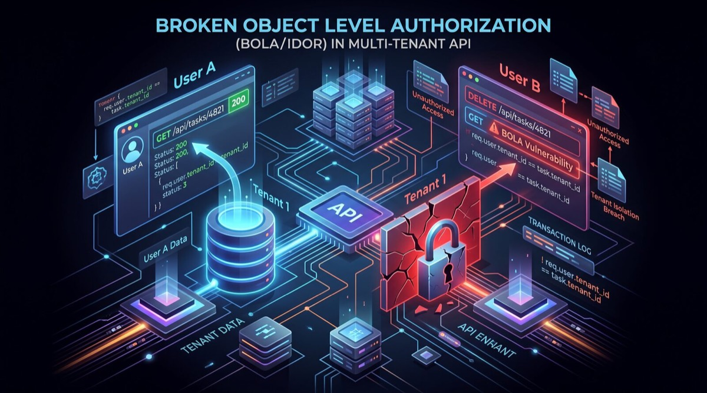

Testiranje Broken Object-Level Authorization: provjera pristupa koju većina test skupova nikad ne proba
Zašto funkcionalni testovi redovno propuštaju bug u autorizaciji koji jednom korisniku dozvoljava da vidi ili mijenja tuđe podatke, i kako ga namjerno testirati.
Većina funkcionalnih test skupova za multi-tenant aplikaciju se uvijek prijavljuje kao samo jedan nalog. Svaki test potvrđuje da korisnik vidi svoje projekte, svoje fakture, svoje poruke. Ono što skoro nijedan ne potvrđuje jeste da taj isti korisnik ne može da vidi tuđe — a upravo u toj rupi živi jedan od najčešćih i najštetnijih API bugova.

Taj bug ima ime: Broken Object Level Authorization, ili BOLA (poznat i kao Insecure Direct Object Reference, ili IDOR). Nalazi se na vrhu OWASP API Security Top 10 liste, a javlja se kad god server provjeri da je zahtjev autentifikovan, ali ne i da onaj ko ga šalje zaista posjeduje traženi objekat. Rješenje zvuči trivijalno kad se izgovori naglas — "provjeri vlasništvo prije nego što vratiš objekat" — i upravo zato i dalje stiže u produkciju: ništa u uobičajenom funkcionalnom testiranju nikad ne izazove taj otkaz.
Kako to izgleda u praksi
Zamislite tim koji pravi SaaS proizvod za upravljanje projektima. Task se nalazi na endpoint-u poput GET /api/tasks/4821. Endpoint ispravno zahtijeva validan session token, pa se anonimni zahtjev odbija. QA test skup se prijavi kao test korisnik, kreira task, učita ga, izmijeni ga, obriše ga — svaki od tih testova prolazi i funkcionalnost ide u produkciju. Niko nije napisao test koji se prijavi kao drugi korisnik i zatraži task 4821 po ID-ju. Ako endpoint povuče task direktno iz baze po ID-ju, a ne provjeri i da li se tenant tog taska poklapa sa tenantom pozivaoca, taj drugi korisnik dobije tuđi task, kompletan, sa odgovorom 200.
Ovo nije hipotetički scenario. Istraživanje APIsec Labs-a, koje je analiziralo 84 potvrđene BOLA prijave podnesene preko HackerOne-a između 2021. i 2026. godine, pokazalo je da su bugovi direktne reference na objekat poput ovog, zajedno sa srodnim obrascem u kojem napadač izvrši akciju koja mijenja stanje tuđeg objekta, činili skoro četiri od pet analiziranih slučajeva. Isto istraživanje je pokazalo da su zahtjevi koji mijenjaju podatke — izmjene, brisanja, promjene stanja — činili skoro polovinu svih prijavljenih slučajeva. To je važno, jer test skup koji samo čita podatke (a takav ima većina timova) pokriva samo manju polovinu problema. Stvarni incidenti imaju isti oblik: Nextcloud API za postavljanje statusa odsutnosti vraćao je privatne podatke drugog korisnika kad se u zahtjevu zamijeni korisničko ime, a Mozilla endpoint za brisanje naloga prihvatao je email adresu žrtve u okviru napadačeve validne sesije, jer sesija nikad nije bila vezana za nalog koji se briše.
Test koji ovo zaista provjerava
Za testiranje BOLA-e ne treba novi alat — treba drugi nalog. Svaki test koji čita, mijenja ili briše objekat identifikovan ID-jem treba da se pokrene jednom kao vlasnik objekta (očekuje se uspjeh) i jednom kao drugi, nepovezan nalog (očekuje se odbijanje sa 403 ili 404, nikad 200).
def test_cannot_read_another_tenants_task(owner_client, other_client):
task = owner_client.post("/api/tasks", json={"title": "Renew contract"}).json()
task_id = task["id"]
# Vlasnik može da pročita svoj task.
assert owner_client.get(f"/api/tasks/{task_id}").status_code == 200
# Drugi, autentifikovani korisnik ne smije.
resp = other_client.get(f"/api/tasks/{task_id}")
assert resp.status_code in (403, 404)
def test_cannot_delete_another_tenants_task(owner_client, other_client):
task = owner_client.post("/api/tasks", json={"title": "Renew contract"}).json()
task_id = task["id"]
resp = other_client.delete(f"/api/tasks/{task_id}")
assert resp.status_code in (403, 404)
# Task mora i dalje da postoji za svog stvarnog vlasnika.
assert owner_client.get(f"/api/tasks/{task_id}").status_code == 200Koristan način da se ovo skalira, bez ručnog pisanja za svaki endpoint, jeste mala matrica: svaki endpoint koji prima ID objekta, ukršten sa čitanjem, izmjenom i brisanjem, ukršten sa "isti vlasnik" i "drugi vlasnik". Generišite slučajeve između naloga iz istih fixture-a koje već koristite za happy-path testove, tako da se provjera vlasništva izvrši svuda gdje se ID objekta pojavljuje — uključujući sporedne rute poput /api/projects/{id}/tasks/{task_id}, koje je lako zaboraviti kad je glavna ruta /api/tasks/{id} već pokrivena.
Zamke i ograničenja
Par navika ovdje stvara lažnu sigurnost. Prelazak sa sekvencijalnih numeričkih ID-jeva na UUID-jeve djeluje kao da rješava problem, ali samo uklanja lak put za nabrajanje (enumeration) — ne pomaže ništa ako se ID i dalje negdje vraća korisniku (u URL-u, export fajlu, webhook payload-u), a server i dalje preskače provjeru vlasništva. APIsec istraživanje eksplicitno kaže da je to ublažavanje, a ne rješenje.
Testiranje samo "očiglednog" vlasnika i jasno nepovezanog napadača takođe propušta stvaran dio slučajeva. U istom skupu podataka, otprilike jedan od osam potvrđenih BOLA bugova bio je vertikalan, a ne horizontalan — običan korisnik koji djeluje nad objektom koji pripada adminu, kao kad je Nextcloud korisnik sa običnim privilegijama mogao da obriše adminovu konfiguraciju storage-a. Matrica testova napravljena samo oko "dva ravnopravna korisnika" to neće uhvatiti; potrebna joj je i dimenzija uloga.
Automatski sigurnosni skeneri su ovdje slabija zaštitna mreža nego što većina timova misli, jer je vlasništvo nad objektom koncept poslovne logike, a ne obrazac koji generički skener može da zaključi iz oblika API-ja — mora se upisati u test kao "ovaj ID pripada ovom nalogu", a to može da napiše samo tim koji razumije model podataka. Lako je preskočiti i stanja životnog ciklusa objekta: objekat koji je arhiviran, soft-delete-ovan ili deaktiviran ponekad izgubi provjeru autorizacije zajedno sa svojim vidljivim statusom, što je posebna rupa koju vrijedi namjerno testirati umjesto pretpostavke da ista provjera i dalje važi.
Šta dalje
Izaberite tri ili četiri endpoint-a sa najviše saobraćaja koji vraćaju objekat po ID-ju i ove sedmice svakom dodajte par testova isti vlasnik/drugi vlasnik — i za čitanje i za zahtjev koji mijenja podatke, ne samo za čitanje. Proširite test fixture-e tako da svaki skup koji kreira test korisnika po defaultu kreira i drugog, nepovezanog, kako bi testiranje između naloga bilo jeftino dodati svuda. Pored horizontalnih, dodajte barem jedan vertikalni slučaj (korisnik sa običnom ulogom pokušava pristup objektu koji pripada adminu). I na kraju, provjerite kuda vam cure ID-jevi objekata: ako se neki pojavljuju u export fajlovima, webhook payload-ima ili linkovima za dijeljenje, to je razlog da i tamo testirate provjeru vlasništva, a ne razlog da pretpostavite da UUID-jevi to već pokrivaju.